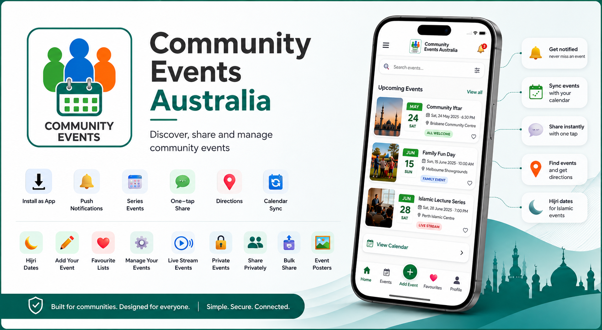

Live now
Community Events Australia
Discover, share and manage community events.
Community Events Australia brings event discovery, organiser tools, notifications, directions, calendar integration, privacy controls and livestreaming into one easy-to-use platform.
DiscoverCity-based search, filters and map discovery
Stay informedPush notifications, reminders and calendar sync
Create & manageEvent tools, recurring events and bulk imports
Connect liveCommunity livestreams and YouTube integration
Community-awareHijri dates, important Shia dates and prayer-time scheduling
Privacy by designProtected addresses, host details and controlled sharing
